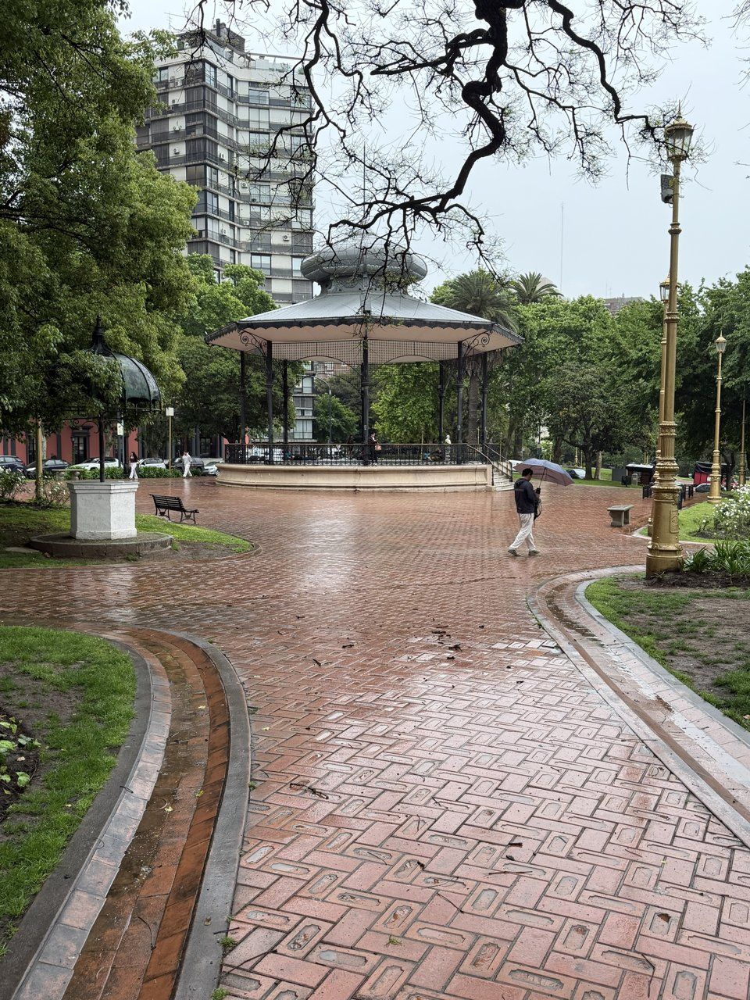
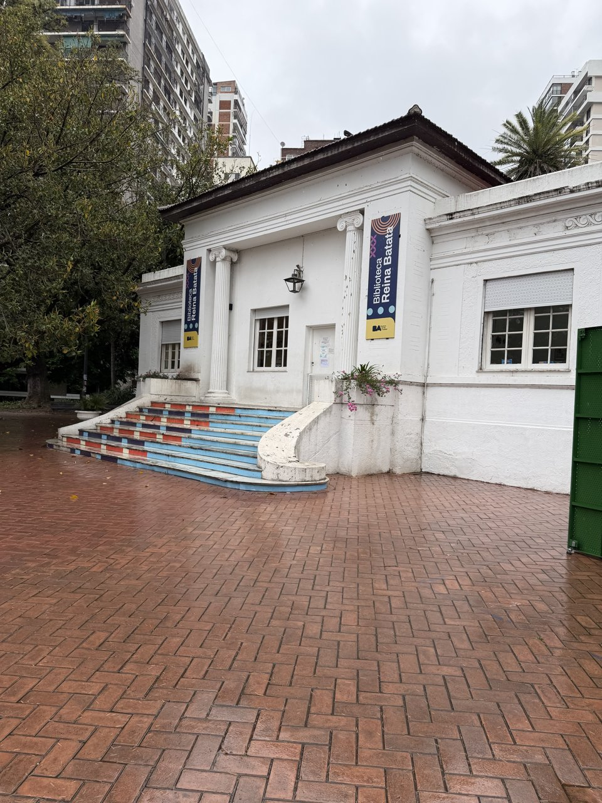
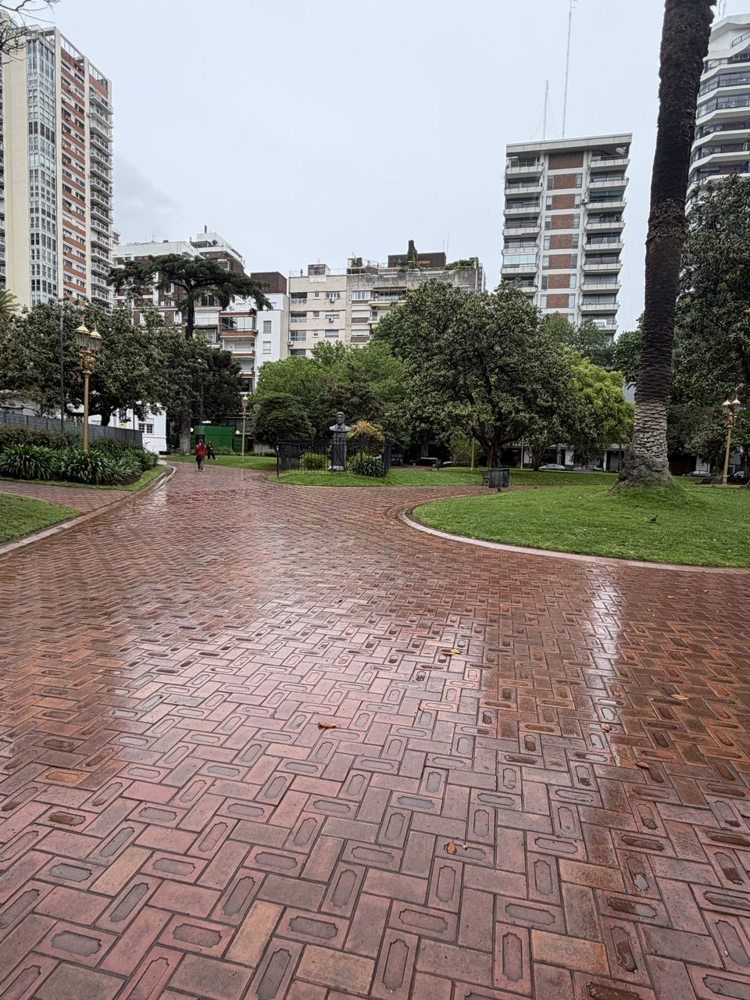
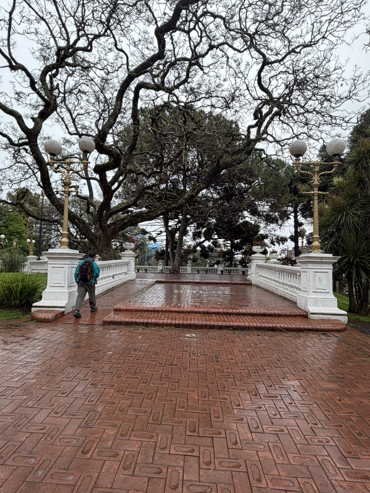
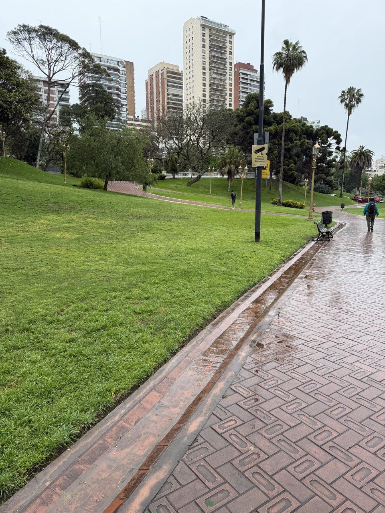

Parque Barrancas de Belgrano
Las antiguas orillas del río convertidas en jardín





Información general
- Ubicación: entre La Pampa, Virrey Vértiz, Echeverría y 11 de Septiembre, Belgrano, Ciudad de Buenos Aires.
- Horario general: abierto todo el día.
- Acceso: gratuito, es un espacio público.
- Biblioteca Reina Batata: lunes a viernes de 10:00 a 17:00; sábados, domingos y feriados de 9:00 a 18:00.
- Cómo llegar: tren Mitre, estación Belgrano C, a pocos metros del parque.
- Accesibilidad: espacio público al aire libre en pendiente; los senderos son de ladrillo y algunos tramos tienen escalones.
Hasta mediados del siglo XIX el Río de la Plata llegaba al pie de estas barrancas. El terraplén del Ferrocarril Mitre, construido en esa época, contuvo las aguas y permitió secar los terrenos. En 1892 el paisajista francés Carlos Thays diseñó el parque, que hoy ocupa tres manzanas elevadas y reúne más de 60 especies vegetales, como ombúes, palmeras, magnolias, robles y ceibos.
En la parte alta se encuentra la Glorieta Antonio Malvagni, construida en 1910 y nombrada en honor al director italiano que creó la Banda Municipal de Buenos Aires. Antes tocaban orquestas y hoy se baila tango y folclore los domingos. El parque también tiene esculturas del siglo XIX, entre ellas una réplica de la Estatua de la Libertad hecha por Frédéric Bartholdi, el mismo autor de la de Nueva York.
Recomendamos recorrerlo con calma, mirar los ladrillos de los senderos, que en muchos casos conservan el nombre del lugar donde se fabricaron, y quedarse un domingo para ver la milonga en la glorieta.
Arquitectura y rincones
La Glorieta
Está desde 1910. Los domingos se baila tango y folclore.
Biblioteca Reina Batata
Una biblioteca para chicos en pleno parque, con un espacio para bebés.
Senderos de ladrillo
Los clásicos ladrillos que se mantienen hasta el día de hoy.
Balaustradas y faroles
Barandas blancas, faroles dorados y árboles gigantes.
Las barrancas
Antes acá llegaba el río. Hoy es ideal para tirarse al pasto y tomar mate.